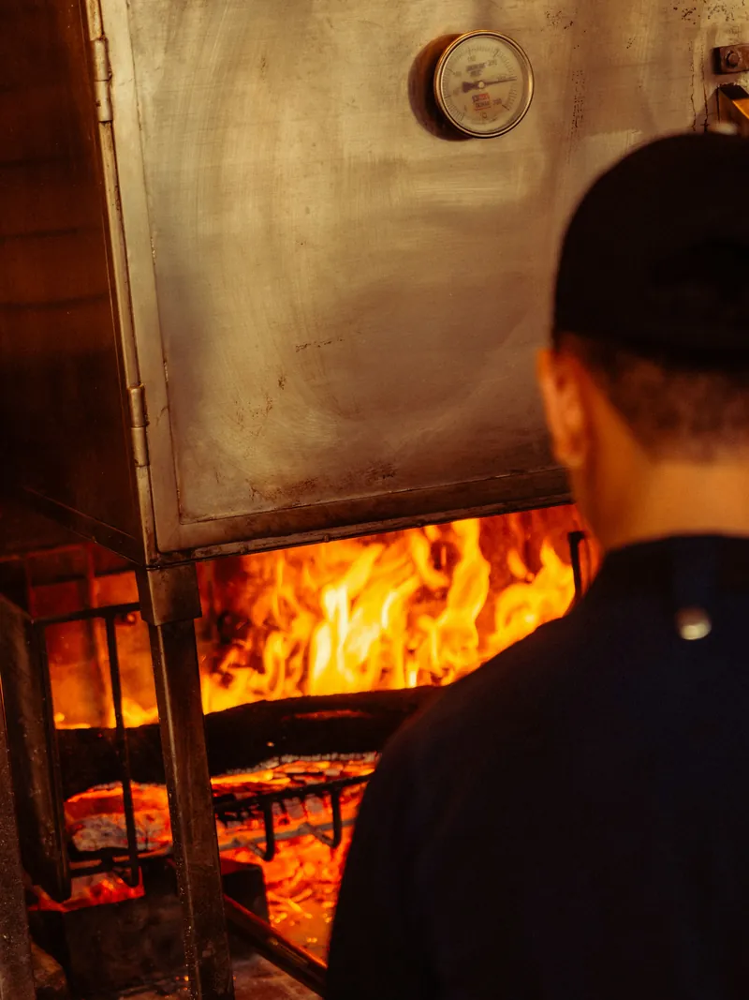
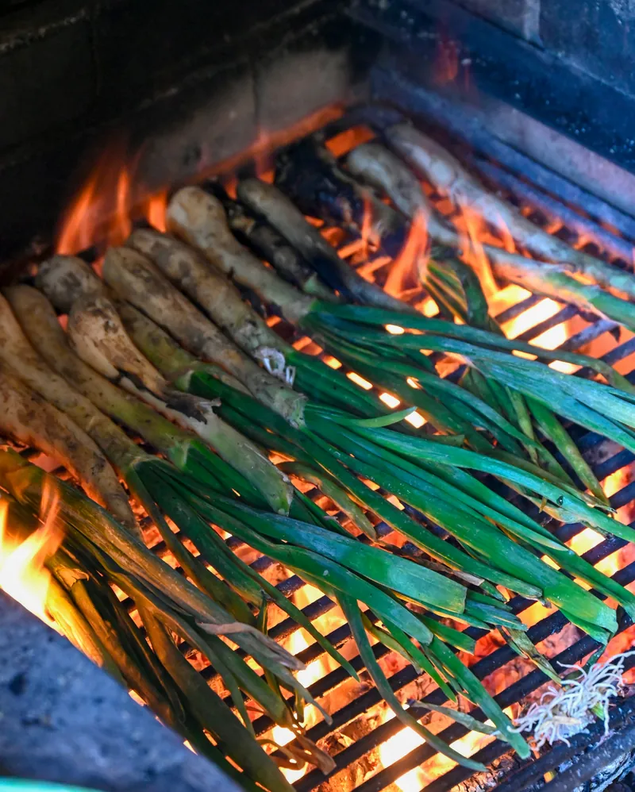
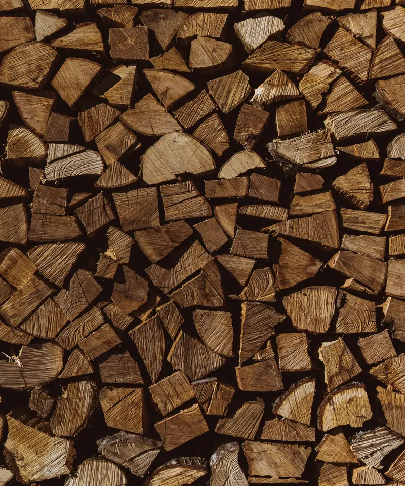
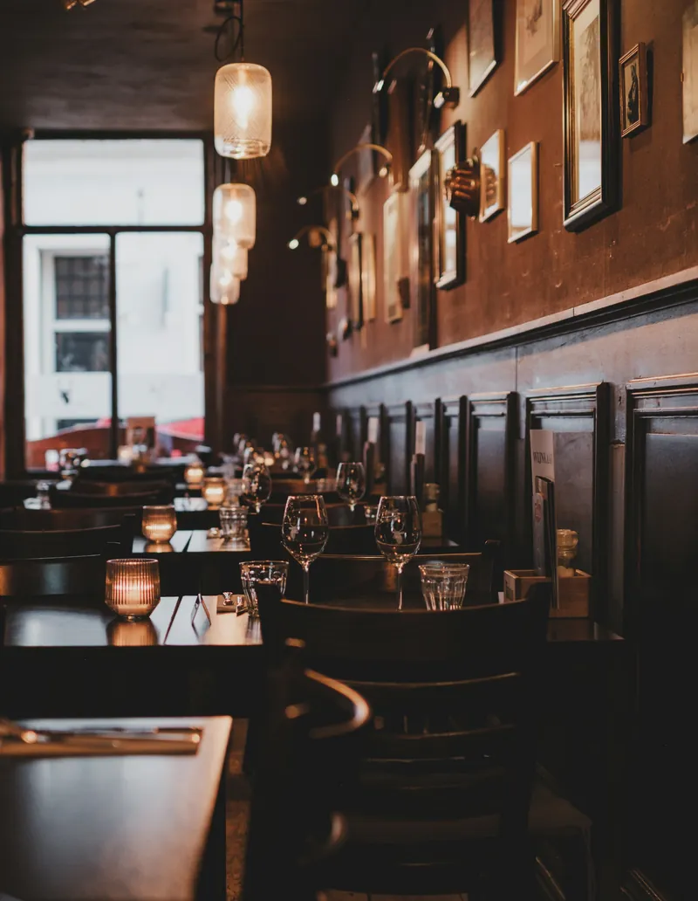

214 Tanner Street, Hudson NYEst. 2019
Everything here is cooked over oak
No gas line. No fryer. No microwave.
The kitchen is a six-foot grill, a brick oven and the woodpile out back. The fire is lit at two and we cook on what it has burned down to by five.
Dinner Wednesday to Saturday from 5. Sundays we open at 12:30 and cook one roast until it runs out.

On the fire this week
The menu is one page and changes when the deliveries do. These six are on now. If you are coming for one dish in particular, ring first and we will tell you if it is still on.
- Flatbread from the ovenCultured butter, smoked salt7
- Scallions in the flamesBurned on the outside, soft inside, with romesco12
- Scallops roasted in the shellHorseradish grated over at the pass19
- Split troutGrilled skin side down, brown butter, lime29
- Sirloin cap for twoRested, sliced and sent out on the board78
- Burnt cheesecakeBaked in the oven as it cools after service11


Prices are in US dollars. A 20% service charge goes on every bill and is shared by the whole team, so there is no tip line.
Lit at two. Cooking by five.

We burn about a cord of oak a week. It comes from a woodlot in Claverack, twelve miles east, and it has to be dry enough to ring when you knock two pieces together. Wet wood smokes and tastes bitter, so we send it back.
Flames are for looking at. Almost everything is cooked on the coals underneath, raked into a deep bed for the beef and a thin one for fish. The grate winds up and down on a wheel and that is the only temperature control we have.
- First fire lit in the grill and the oven.
- Second load on. Leeks and beets go into the ash.
- Oven is hot enough for bread. First flatbreads are for the staff.
- Doors open.
- Last order on a Friday or Saturday. Cheesecakes and tomorrow's beans go into the oven as it cools.
The room
Forty-two seats in what was a harness shop, with the original wainscot and not much else on the walls. Eight of the seats are at the counter facing the grill. We do not take bookings for those, so if you walk in at five there is a good chance of one.
It is warm near the fire and it gets loud after eight. You will go home smelling a little of woodsmoke.
- Tables
- Two to six people. Seven or more, please call.
- Counter
- Eight seats, walk-in only.
- Children
- Welcome. We have two high chairs.
- Step-free
- Level entrance from the street, accessible restroom.

| Monday | Closed |
|---|---|
| Tuesday | Closed |
| Wednesday | 5:00 to 9:30 pm |
| Thursday | 5:00 to 9:30 pm |
| Friday | 5:00 to 10:30 pm |
| Saturday | 5:00 to 10:30 pm |
| Sunday | 12:30 to 8:00 pm |
214 Tanner Street
Hudson, NY 12534
Ten minutes on foot from Hudson station, uphill. Street parking on Tanner and a public lot one block north.